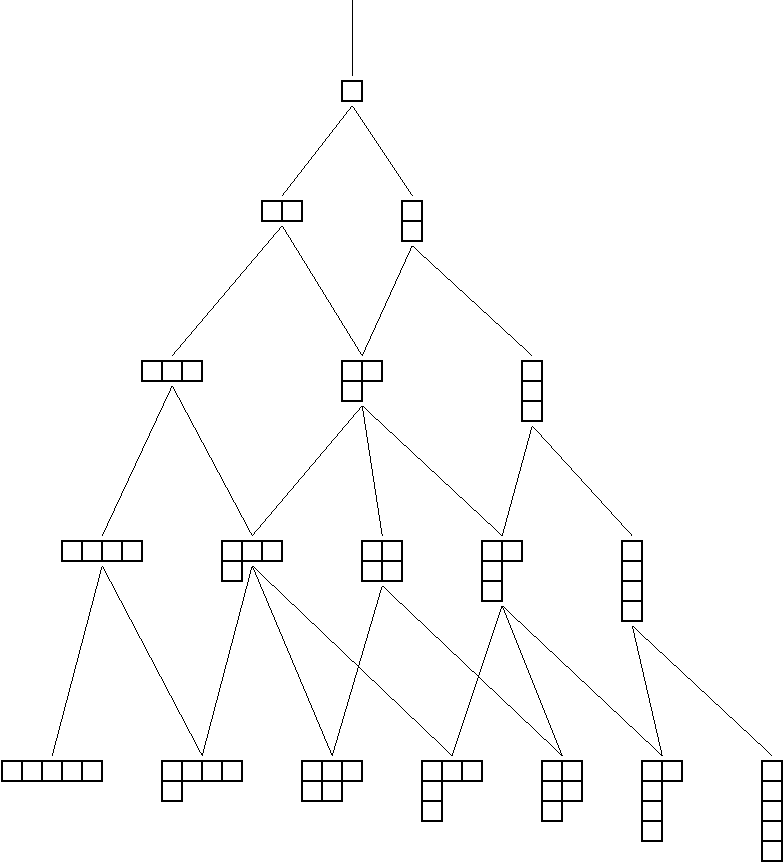
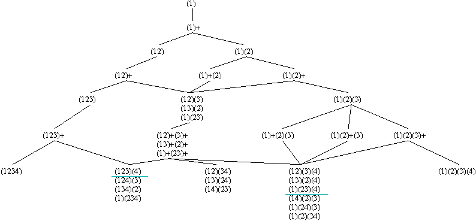

Xfig resources
This is an experimental repository of some of my xfig figures. I'm putting them here in case that turns out to be useful (mainly to me,
but also to anyone else). You're welcome to use them -- an acknowledgement would be appreciated.

younggraph1.fig

partwalk1.fig
perm2part2.fig
(Brief explanatory notes.)
BACK